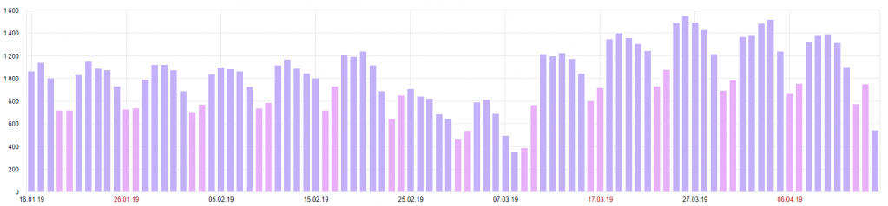
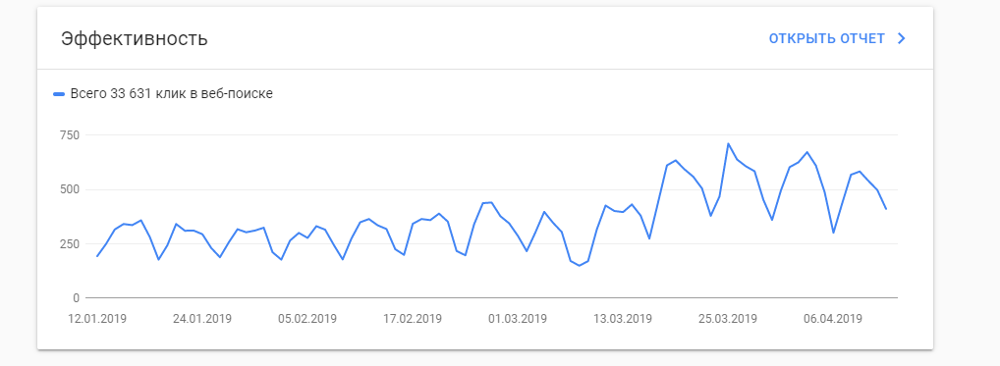

О проекте
Интернет-журнал dentalmagazine.ru
Изначально ресурс позиционировался как электронная версия печатного издания «Дентал ЮГ». В конце 2017 года было принято решение о закрытии печатной версии, и сайт стал функционировать как самостоятельный интернет-журнал.
Проведенные работы по оптимизации сайта:
Устранены внешние ссылки, скрытые в коде сайта
Составлены шаблоны для генерации тегов Title и мета-тега Description на всех страницах сайта
Скорректированы H1-H2 заголовки
Для наиболее популярных статей мета-теги прописываются индивидуально (вручную)
Наращивание ссылочного профиля сайта
Исправлены проблемы с индексацией сайта
Настроено формирование турбостраниц, а также произведена отладка их отображения
Добавлена возможность подписки на новые публикации по почте и при помощи оповещения в браузере
Рост посещемости сайта по данным Яндекс.Метрики в 1,5 раза:

Эффективность сайта по данным Google Search Console выросла в 2 раза:
